Кадры для независимой разметки
person-bicycle-car-detection.mp4
Разметка отсутствует. Пустые annotations не означают отсутствие объектов. Перед обучением нужны права на видео и проверка человеком.
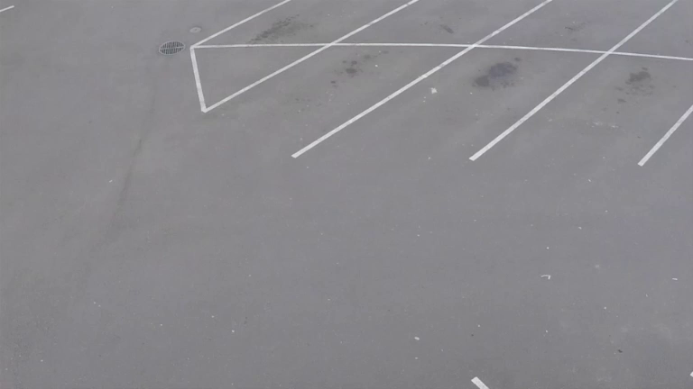
Frame 0 · 0.00s · UNREVIEWED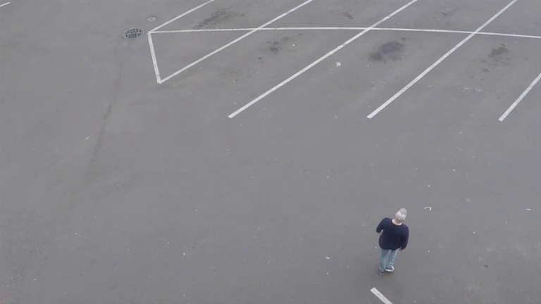
Frame 28 · 2.33s · UNREVIEWED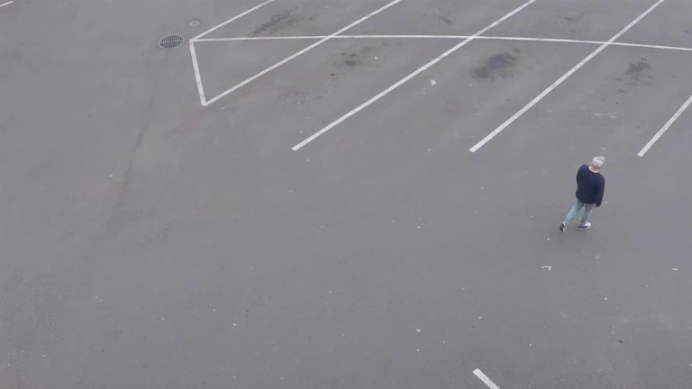
Frame 56 · 4.67s · UNREVIEWED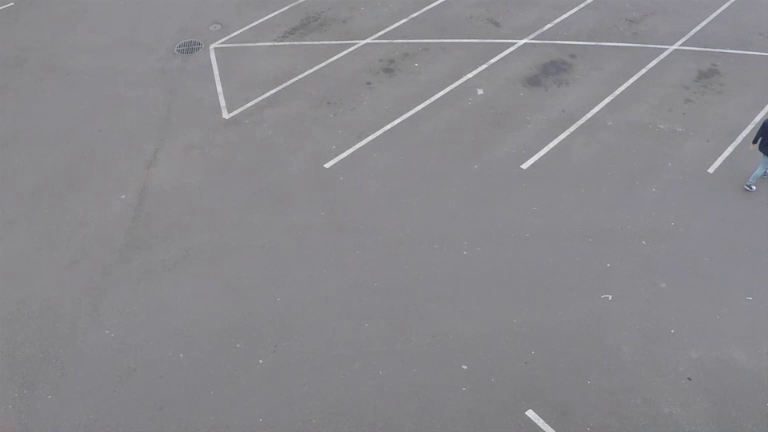
Frame 84 · 7.00s · UNREVIEWED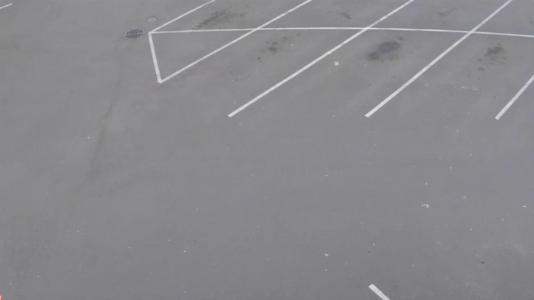
Frame 112 · 9.33s · UNREVIEWED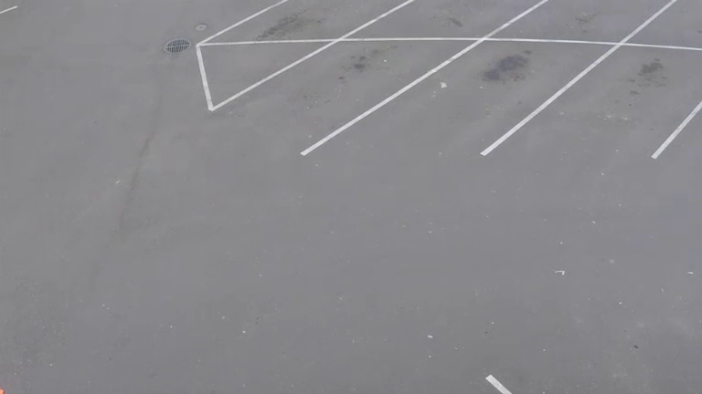
Frame 140 · 11.67s · UNREVIEWED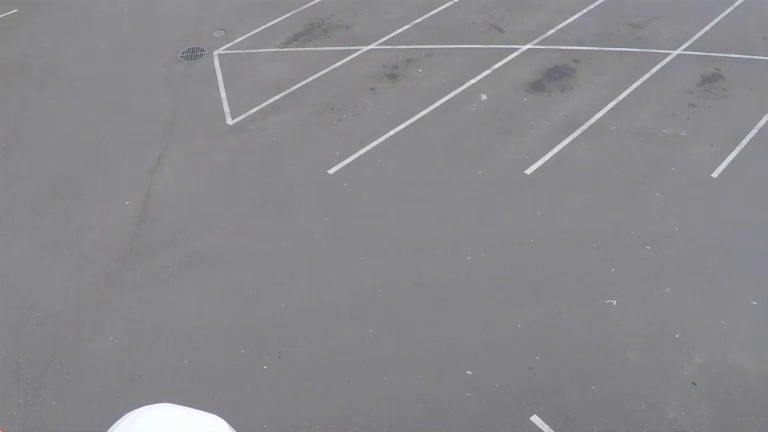
Frame 169 · 14.08s · UNREVIEWED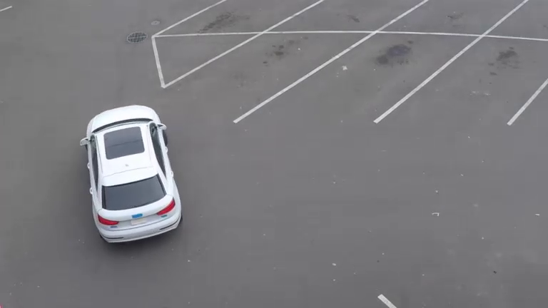
Frame 197 · 16.42s · UNREVIEWED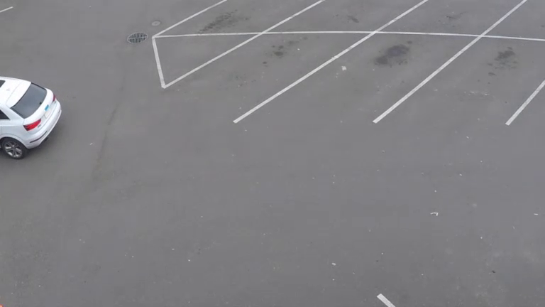
Frame 225 · 18.75s · UNREVIEWED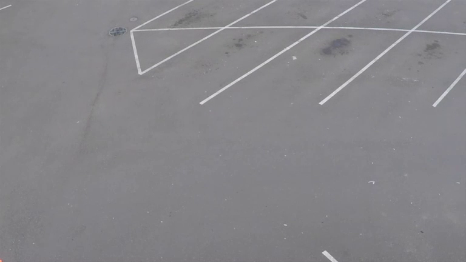
Frame 253 · 21.08s · UNREVIEWED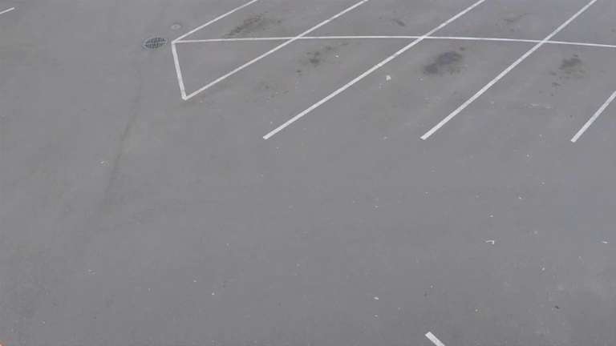
Frame 281 · 23.42s · UNREVIEWED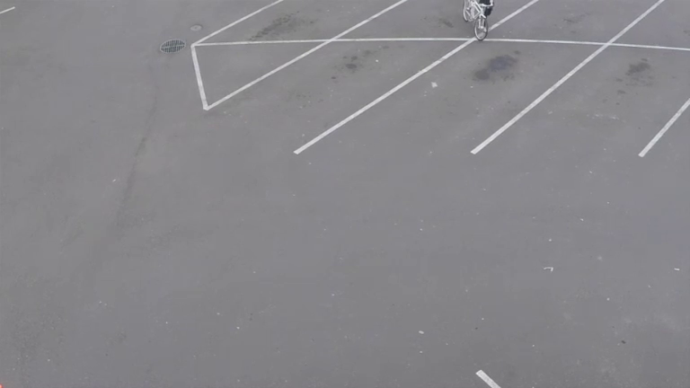
Frame 309 · 25.75s · UNREVIEWED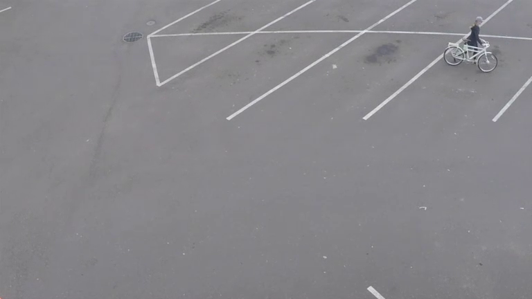
Frame 337 · 28.08s · UNREVIEWED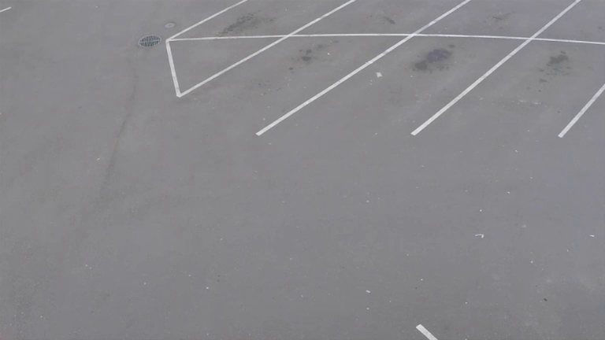
Frame 365 · 30.42s · UNREVIEWED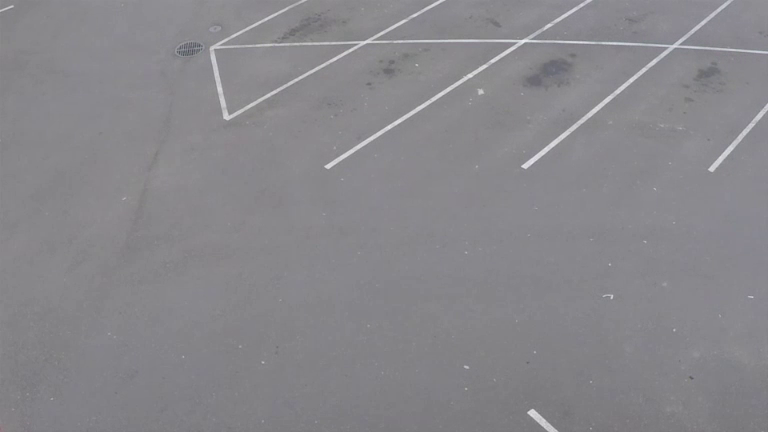
Frame 393 · 32.75s · UNREVIEWED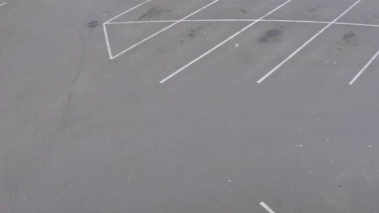
Frame 421 · 35.08s · UNREVIEWED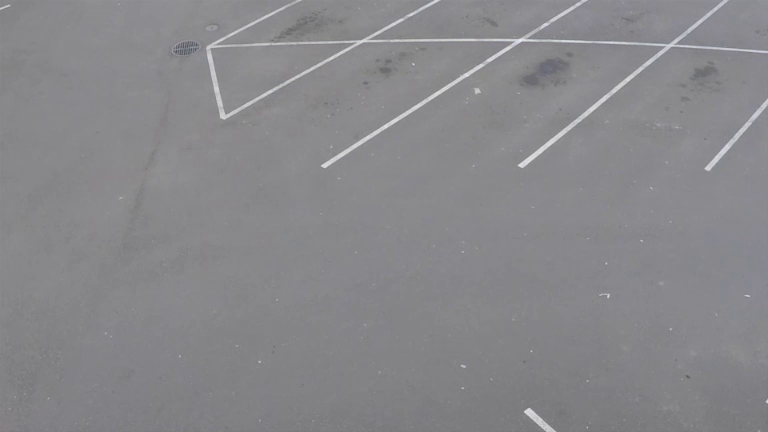
Frame 449 · 37.42s · UNREVIEWED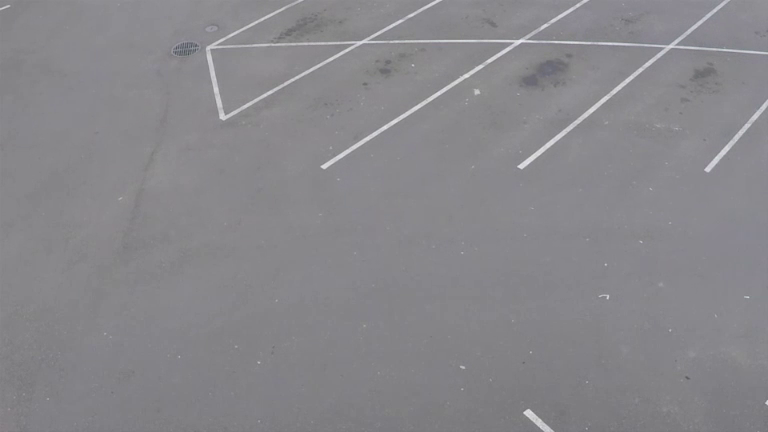
Frame 477 · 39.75s · UNREVIEWED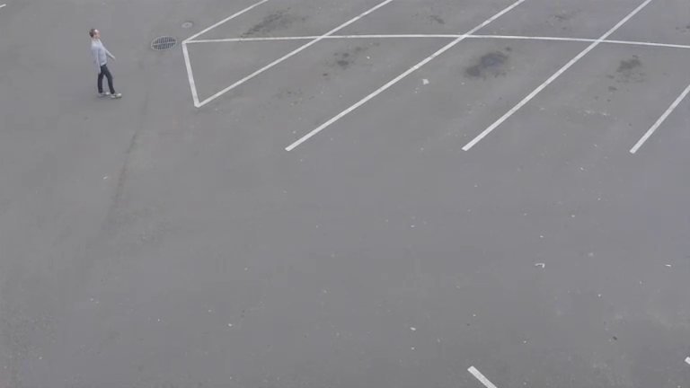
Frame 506 · 42.17s · UNREVIEWED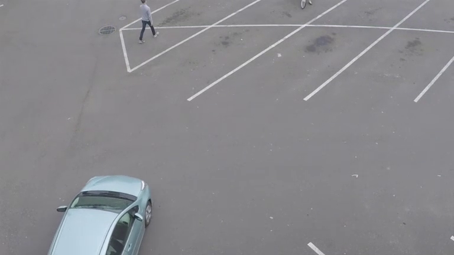
Frame 534 · 44.50s · UNREVIEWED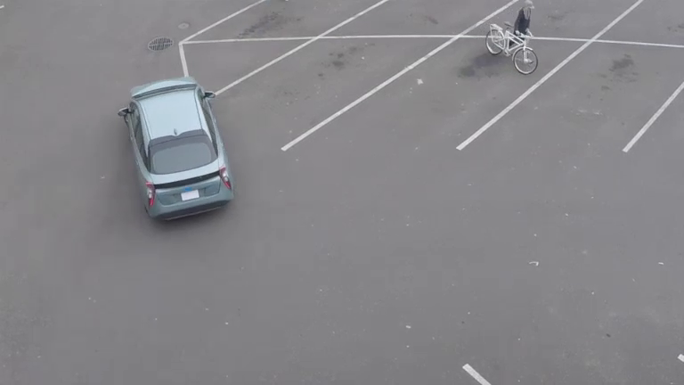
Frame 562 · 46.83s · UNREVIEWED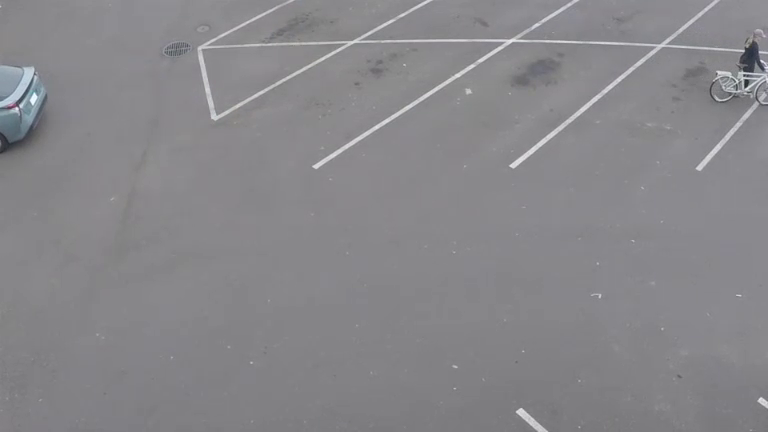
Frame 590 · 49.17s · UNREVIEWED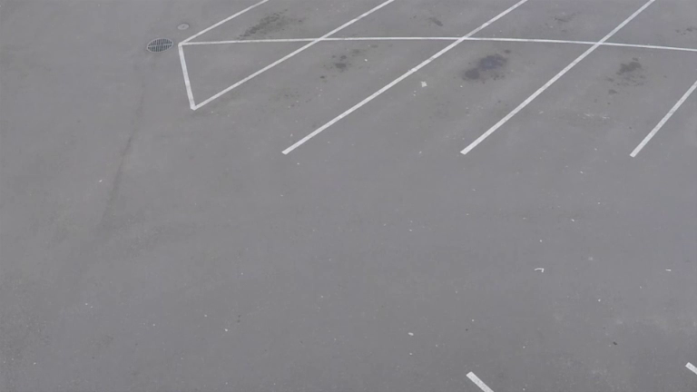
Frame 618 · 51.50s · UNREVIEWED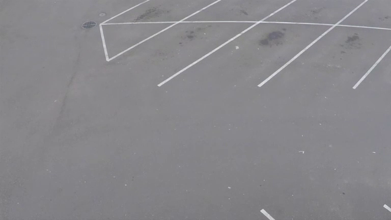
Frame 646 · 53.83s · UNREVIEWED